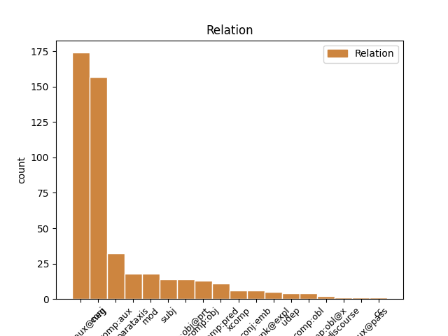
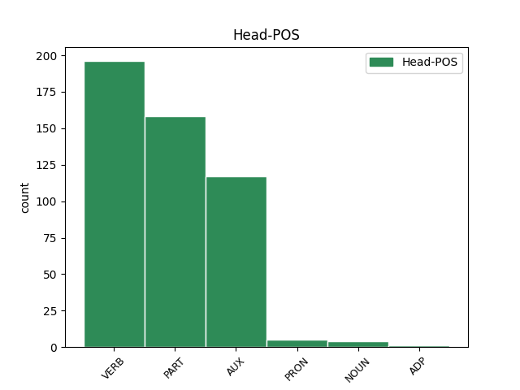
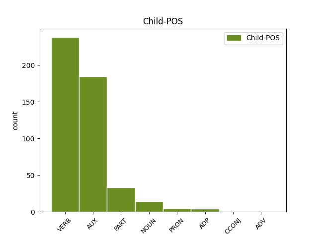

Distribution of features within this leaf



Agreement Rules sorted by frequency.
- When the dependent token is the conjunct(conj) of the head token, and the head token is VERB and the dependent token is VERB.
1 Treuzlizherennet _ _ _ _ 0 _ _ _
2 u _ _ _ _ 0 _ _ _
3 Distaget distage VERB _ Mood=Ind|Tense=Pres|VerbForm=Fin|Voice=Pass 0 _ _ _
4 /u/ _ _ _ _ 0 _ _ _
5 pe _ _ _ _ 0 _ _ _
6 ú _ _ _ _ 0 _ _ _
7 Distaget distage VERB _ Mood=Ind|Tense=Pres|VerbForm=Fin|Voice=Pass 3 conj _ _
8 /uː/. _ _ _ _ 0 _ _ _
1 Desket _ _ _ _ 0 _ _ _
2 e e PART _ Mood=Ind|Number=Sing|Person=3|Polarity=Neg|VerbForm=Fin 0 _ _ _
3 oa _ AUX _ Form=Ecl|Mood=Ind|Tense=Past 2 comp:aux@neg _ _
4 bet _ _ _ _ 0 _ _ _
5 gant _ _ _ _ 0 _ _ _
6 an _ _ _ _ 0 _ _ _
7 doue _ _ _ _ 0 _ _ _
8 Hermes _ _ _ _ 0 _ _ _
9 da _ _ _ _ 0 _ _ _
10 seniñ _ _ _ _ 0 _ _ _
11 fleut _ _ _ _ 0 _ _ _
12 ha _ _ _ _ 0 _ _ _
13 lirenn _ _ _ _ 0 _ _ _
14 . _ _ _ _ 0 _ _ _
1 Anvet _ _ _ _ 0 _ _ _
2 e e PART _ Mood=Ind|Number=Sing|Person=3|Polarity=Neg|VerbForm=Fin 0 _ _ _
3 oa _ VERB _ Form=Ecl|Mood=Ind|Tense=Past 2 comp:aux@neg _ _
4 Vendieg _ _ _ _ 0 _ _ _
5 e _ _ _ _ 0 _ _ _
6 Rusia _ _ _ _ 0 _ _ _
7 ivez _ _ _ _ 0 _ _ _
8 . _ _ _ _ 0 _ _ _
1 D'ar _ _ _ _ 0 _ _ _
2 4 _ _ _ _ 0 _ _ _
3 a _ _ _ _ 0 _ _ _
4 viz _ _ _ _ 0 _ _ _
5 C'hwevrer _ _ _ _ 0 _ _ _
6 1992 _ _ _ _ 0 _ _ _
7 e e AUX _ Mood=Ind|Number=Sing|Person=3|Polarity=Neg|VerbForm=Fin 0 _ _ _
8 oa _ AUX _ Form=Ecl|Mood=Ind|Tense=Past 7 comp:aux@neg _ _
9 bet _ _ _ _ 0 _ _ _
10 kaset _ _ _ _ 0 _ _ _
11 un _ _ _ _ 0 _ _ _
12 taol _ _ _ _ 0 _ _ _
13 - _ _ _ _ 0 _ _ _
14 stad _ _ _ _ 0 _ _ _
15 gant _ _ _ _ 0 _ _ _
16 ar _ _ _ _ 0 _ _ _
17 MBR-200 _ _ _ _ 0 _ _ _
18 ha _ _ _ _ 0 _ _ _
19 Hugo _ _ _ _ 0 _ _ _
20 Chávez _ _ _ _ 0 _ _ _
21 en _ _ _ _ 0 _ _ _
22 e _ _ _ _ 0 _ _ _
23 benn _ _ _ _ 0 _ _ _
24 . _ _ _ _ 0 _ _ _
1 E _ _ _ _ 0 _ _ _
2 1992 _ _ _ _ 0 _ _ _
3 e _ _ _ _ 0 _ _ _
4 voe _ AUX _ Mood=Ind|Number=Sing|Person=3|Tense=Past|VerbForm=Fin 0 _ _ _
5 pedet _ _ _ _ 0 _ _ _
6 da _ _ _ _ 0 _ _ _
7 c'houel _ _ _ _ 0 _ _ _
8 an _ _ _ _ 0 _ _ _
9 transmusicales _ _ _ _ 0 _ _ _
10 e _ _ _ _ 0 _ _ _
11 Roazhon _ _ _ _ 0 _ _ _
12 ha haver AUX _ Mood=Ind|Number=Sing|Person=3|Tense=Pres|VerbForm=Fin 4 conj _ _
13 kanañ _ _ _ _ 0 _ _ _
14 a _ _ _ _ 0 _ _ _
15 reas _ _ _ _ 0 _ _ _
16 e _ _ _ _ 0 _ _ _
17 - _ _ _ _ 0 _ _ _
18 unan _ _ _ _ 0 _ _ _
19 a _ _ _ _ 0 _ _ _
20 capella _ _ _ _ 0 _ _ _
21 etre _ _ _ _ 0 _ _ _
22 ur _ _ _ _ 0 _ _ _
23 strollad _ _ _ _ 0 _ _ _
24 rock _ _ _ _ 0 _ _ _
25 hag _ _ _ _ 0 _ _ _
26 ur _ _ _ _ 0 _ _ _
27 strollad _ _ _ _ 0 _ _ _
28 rap _ _ _ _ 0 _ _ _
29 , _ _ _ _ 0 _ _ _
30 dirak _ _ _ _ 0 _ _ _
31 tud _ _ _ _ 0 _ _ _
32 n'anavezas _ _ _ _ 0 _ _ _
33 netra _ _ _ _ 0 _ _ _
34 diwar _ _ _ _ 0 _ _ _
35 - _ _ _ _ 0 _ _ _
36 benn _ _ _ _ 0 _ _ _
37 ar _ _ _ _ 0 _ _ _
38 c'han _ _ _ _ 0 _ _ _
39 e _ _ _ _ 0 _ _ _
40 brezhoneg _ _ _ _ 0 _ _ _
41 . _ _ _ _ 0 _ _ _
1 Nebeut _ _ _ _ 0 _ _ _
2 a _ _ _ _ 0 _ _ _
3 draoù _ _ _ _ 0 _ _ _
4 a _ _ _ _ 0 _ _ _
5 anavezer _ _ _ _ 0 _ _ _
6 diwarni _ _ _ _ 0 _ _ _
7 , _ _ _ _ 0 _ _ _
8 met _ _ _ _ 0 _ _ _
9 liammet _ _ _ _ 0 _ _ _
10 e e PART _ Mood=Ind|Number=Sing|Person=3|Polarity=Neg|VerbForm=Fin 11 comp:aux _ _
11 oa _ AUX _ Form=Ecl|Mood=Ind|Tense=Past 0 _ _ _
12 ouzh _ _ _ _ 0 _ _ _
13 oberiantiz _ _ _ _ 0 _ _ _
14 Riothamus _ _ _ _ 0 _ _ _
15 e _ _ _ _ 0 _ _ _
16 gwalarn _ _ _ _ 0 _ _ _
17 Gallia _ _ _ _ 0 _ _ _
18 . _ _ _ _ 0 _ _ _
1 Harzet _ _ _ _ 0 _ _ _
2 e e PART _ Mood=Ind|Number=Sing|Person=3|Polarity=Neg|VerbForm=Fin 0 _ _ _
3 vez vez VERB _ Form=Ecl|Mood=Ind|Tense=Pres 2 comp:obj@prt _ _
4 ar _ _ _ _ 0 _ _ _
5 c'hoidigezh _ _ _ _ 0 _ _ _
6 goude _ _ _ _ 0 _ _ _
7 unan _ _ _ _ 0 _ _ _
8 pe _ _ _ _ 0 _ _ _
9 daou _ _ _ _ 0 _ _ _
10 zeiz _ _ _ _ 0 _ _ _
11 , _ _ _ _ 0 _ _ _
12 gant _ _ _ _ 0 _ _ _
13 aezhenn _ _ _ _ 0 _ _ _
14 e _ _ _ _ 0 _ _ _
15 Japan _ _ _ _ 0 _ _ _
16 hag _ _ _ _ 0 _ _ _
17 dre _ _ _ _ 0 _ _ _
18 poazhañ _ _ _ _ 0 _ _ _
19 an _ _ _ _ 0 _ _ _
20 deilioù _ _ _ _ 0 _ _ _
21 en _ _ _ _ 0 _ _ _
22 ur _ _ _ _ 0 _ _ _
23 baelon _ _ _ _ 0 _ _ _
24 e _ _ _ _ 0 _ _ _
25 Sina _ _ _ _ 0 _ _ _
26 . _ _ _ _ 0 _ _ _
1 Ganet _ _ _ _ 0 _ _ _
2 e _ _ _ _ 0 _ _ _
3 voe voe VERB _ Mood=Ind|Number=Sing|Person=3|Tense=Past|VerbForm=Fin 0 _ _ _
4 d'an _ _ _ _ 0 _ _ _
5 29 _ _ _ _ 0 _ _ _
6 a _ _ _ _ 0 _ _ _
7 viz _ _ _ _ 0 _ _ _
8 Here _ _ _ _ 0 _ _ _
9 1878 _ _ _ _ 0 _ _ _
10 e _ _ _ _ 0 _ _ _
11 Bourdel _ _ _ _ 0 _ _ _
12 ha avere AUX _ Mood=Ind|Number=Sing|Person=3|Tense=Pres|VerbForm=Fin 3 conj _ _
13 mervel _ _ _ _ 0 _ _ _
14 a _ _ _ _ 0 _ _ _
15 reas _ _ _ _ 0 _ _ _
16 d'ar _ _ _ _ 0 _ _ _
17 4 _ _ _ _ 0 _ _ _
18 a _ _ _ _ 0 _ _ _
19 viz _ _ _ _ 0 _ _ _
20 C'hwrevrer _ _ _ _ 0 _ _ _
21 1949 _ _ _ _ 0 _ _ _
22 e _ _ _ _ 0 _ _ _
23 Kintin _ _ _ _ 0 _ _ _
24 . _ _ _ _ 0 _ _ _
1 E _ _ _ _ 0 _ _ _
2 1497 _ _ _ _ 0 _ _ _
3 ez _ _ _ _ 0 _ _ _
4 eas _ _ _ _ 0 _ _ _
5 Dias _ _ _ _ 0 _ _ _
6 da izan AUX _ Aspect=Prog|Mood=Ind|Number[abs]=Sing|Person[abs]=3 0 _ _ _
7 - _ _ _ _ 0 _ _ _
8 heul _ _ _ _ 0 _ _ _
9 Vasco _ _ _ _ 0 _ _ _
10 da _ _ _ _ 0 _ _ _
11 Gama _ _ _ _ 0 _ _ _
12 , _ _ _ _ 0 _ _ _
13 en _ _ _ _ 0 _ _ _
14 e _ _ _ _ 0 _ _ _
15 veaj _ _ _ _ 0 _ _ _
16 da izan VERB _ Aspect=Prog|Mood=Ind|Number[abs]=Sing|Person[abs]=3 6 conj _ _
17 Indez _ _ _ _ 0 _ _ _
18 . _ _ _ _ 0 _ _ _
1 D'ar _ _ _ _ 0 _ _ _
2 25vet _ _ _ _ 0 _ _ _
3 a _ _ _ _ 0 _ _ _
4 viz _ _ _ _ 0 _ _ _
5 Gouere _ _ _ _ 0 _ _ _
6 1624 _ _ _ _ 0 _ _ _
7 e _ _ _ _ 0 _ _ _
8 teu _ VERB _ Mood=Ind|Tense=Past 0 _ _ _
9 dezhañ _ _ _ _ 0 _ _ _
10 ar _ _ _ _ 0 _ _ _
11 vaouez _ _ _ _ 0 _ _ _
12 evit _ _ _ _ 0 _ _ _
13 e _ _ _ _ 0 _ _ _
14 lavaret _ _ _ _ 0 _ _ _
15 : _ _ _ _ 0 _ _ _
16 " _ _ _ _ 0 _ _ _
17 N'ho _ _ _ _ 0 _ _ _
18 peus _ VERB _ Mood=Ind|Number=Sing|Person=1|Tense=Pres|VerbForm=Fin 8 parataxis _ _
19 ket _ _ _ _ 0 _ _ _
20 aon _ _ _ _ 0 _ _ _
21 , _ _ _ _ 0 _ _ _
22 me _ _ _ _ 0 _ _ _
23 zo _ _ _ _ 0 _ _ _
24 Ann _ _ _ _ 0 _ _ _
25 , _ _ _ _ 0 _ _ _
26 mamm _ _ _ _ 0 _ _ _
27 Mari _ _ _ _ 0 _ _ _
28 ! _ _ _ _ 0 _ _ _
1 Implijet _ _ _ _ 0 _ _ _
2 e e AUX _ Mood=Ind|Number=Sing|Person=3|Polarity=Neg|VerbForm=Fin 3 comp:aux _ _
3 oa oa AUX _ Form=Ecl|Mood=Ind|Tense=Past 0 _ _ _
4 bet _ _ _ _ 0 _ _ _
5 bet _ _ _ _ 0 _ _ _
6 ar _ _ _ _ 0 _ _ _
7 banniel _ _ _ _ 0 _ _ _
8 treset _ _ _ _ 0 _ _ _
9 gant _ _ _ _ 0 _ _ _
10 Baker _ _ _ _ 0 _ _ _
11 evit _ _ _ _ 0 _ _ _
12 ar _ _ _ _ 0 _ _ _
13 wech _ _ _ _ 0 _ _ _
14 kentañ _ _ _ _ 0 _ _ _
15 e _ _ _ _ 0 _ _ _
16 Dibunadeg _ _ _ _ 0 _ _ _
17 Frankis _ _ _ _ 0 _ _ _
18 Gae _ _ _ _ 0 _ _ _
19 San _ _ _ _ 0 _ _ _
20 Francisco _ _ _ _ 0 _ _ _
21 e _ _ _ _ 0 _ _ _
22 d'ar25 _ _ _ _ 0 _ _ _
23 a _ _ _ _ 0 _ _ _
24 viz _ _ _ _ 0 _ _ _
25 Mezhven _ _ _ _ 0 _ _ _
26 1978 _ _ _ _ 0 _ _ _
27 . _ _ _ _ 0 _ _ _
1 Ne _ _ _ _ 0 _ _ _
2 ouezer _ VERB _ Aspect=Prog|Mood=Ind|Number[abs]=Sing|Person[abs]=1 0 _ _ _
3 ket _ _ _ _ 0 _ _ _
4 resis _ _ _ _ 0 _ _ _
5 pet _ _ _ _ 0 _ _ _
6 yezh _ _ _ _ 0 _ _ _
7 karibek _ _ _ _ 0 _ _ _
8 ez _ _ _ _ 0 _ _ _
9 eus eu VERB _ Aspect=Prog|Mood=Ind|Number[abs]=Sing|Number[erg]=Plur|Person[abs]=3|Person[erg]=3 2 comp:obj _ _
10 , _ _ _ _ 0 _ _ _
11 etre _ _ _ _ 0 _ _ _
12 20 _ _ _ _ 0 _ _ _
13 ha _ _ _ _ 0 _ _ _
14 40 _ _ _ _ 0 _ _ _
15 . _ _ _ _ 0 _ _ _
1 Evit _ _ _ _ 0 _ _ _
2 abegoù _ _ _ _ 0 _ _ _
3 politikel _ _ _ _ 0 _ _ _
4 hag _ _ _ _ 0 _ _ _
5 ekonomikel _ _ _ _ 0 _ _ _
6 emañ _ VERB _ Mood=Ind|Tense=Pres 0 _ _ _
7 an _ _ _ _ 0 _ _ _
8 dud _ _ _ _ 0 _ _ _
9 o _ _ _ _ 0 _ _ _
10 tilezel _ _ _ _ 0 _ _ _
11 o _ _ _ _ 0 _ _ _
12 yezh _ _ _ _ 0 _ _ _
13 tamm _ _ _ _ 0 _ _ _
14 - _ _ _ _ 0 _ _ _
15 ha _ _ _ _ 0 _ _ _
16 - _ _ _ _ 0 _ _ _
17 tamm _ _ _ _ 0 _ _ _
18 evit _ _ _ _ 0 _ _ _
19 ober _ _ _ _ 0 _ _ _
20 muioc'h _ _ _ _ 0 _ _ _
21 - _ _ _ _ 0 _ _ _
22 mui _ _ _ _ 0 _ _ _
23 gant _ _ _ _ 0 _ _ _
24 ar _ _ _ _ 0 _ _ _
25 perseg _ _ _ _ 0 _ _ _
26 ha _ _ _ _ 0 _ _ _
27 peurliesañ _ _ _ _ 0 _ _ _
28 ne _ _ _ _ 0 _ _ _
29 vez _ VERB _ Aspect=Hab|Mood=Ind|Number=Sing|Person=3|Polarity=Pos|Tense=Pres 6 mod _ _
30 ket _ _ _ _ 0 _ _ _
31 desket _ _ _ _ 0 _ _ _
32 an _ _ _ _ 0 _ _ _
33 dareg _ _ _ _ 0 _ _ _
34 d'ar _ _ _ _ 0 _ _ _
35 vugale _ _ _ _ 0 _ _ _
36 . _ _ _ _ 0 _ _ _
1 Un _ _ _ _ 0 _ _ _
2 tiegezh _ _ _ _ 0 _ _ _
3 niverus _ _ _ _ 0 _ _ _
4 e e AUX _ Mood=Ind|Number=Sing|Person=3|Polarity=Neg|VerbForm=Fin 0 _ _ _
5 oa _ VERB _ Mood=Ind|Number=Sing|Person=3|Tense=Imp|VerbForm=Fin 4 comp:aux@neg _ _
6 tiegezh _ _ _ _ 0 _ _ _
7 Doyle _ _ _ _ 0 _ _ _
8 peogwir _ _ _ _ 0 _ _ _
9 e _ _ _ _ 0 _ _ _
10 voe _ _ _ _ 0 _ _ _
11 ganet _ _ _ _ 0 _ _ _
12 nav _ _ _ _ 0 _ _ _
13 breur _ _ _ _ 0 _ _ _
14 ha _ _ _ _ 0 _ _ _
15 c'hoar _ _ _ _ 0 _ _ _
16 da _ _ _ _ 0 _ _ _
17 Arthur _ _ _ _ 0 _ _ _
18 vihan _ _ _ _ 0 _ _ _
19 . _ _ _ _ 0 _ _ _
1 Skrivet _ _ _ _ 0 _ _ _
2 e e AUX _ Mood=Ind|Number=Sing|Person=3|Tense=Pres|VerbForm=Fin 3 xcomp _ _
3 vez vez VERB _ Aspect=Hab|Mood=Ind|Number=Sing|Person=3|Polarity=Pos|Tense=Pres 0 _ _ _
4 pe _ _ _ _ 0 _ _ _
5 gant _ _ _ _ 0 _ _ _
6 al _ _ _ _ 0 _ _ _
7 lizherenneg _ _ _ _ 0 _ _ _
8 latin _ _ _ _ 0 _ _ _
9 pe _ _ _ _ 0 _ _ _
10 gant _ _ _ _ 0 _ _ _
11 ar _ _ _ _ 0 _ _ _
12 skritur _ _ _ _ 0 _ _ _
13 banglaek _ _ _ _ 0 _ _ _
14 . _ _ _ _ 0 _ _ _
1 Troidigezh _ _ _ _ 0 _ _ _
2 dieub _ _ _ _ 0 _ _ _
3 : _ _ _ _ 0 _ _ _
4 Pep _ _ _ _ 0 _ _ _
5 banne _ _ _ _ 0 _ _ _
6 avel _ _ _ _ 0 _ _ _
7 deoc'h _ _ _ _ 0 _ _ _
8 zo _ _ _ _ 0 _ _ _
9 kriz _ _ _ _ 0 _ _ _
10 ' _ _ _ _ 0 _ _ _
11 vel _ _ _ _ 0 _ _ _
12 avel _ AUX _ Mood=Imp|Number=Sing|Person=2|VerbForm=Fin 0 _ _ _
13 viz _ VERB _ Mood=Imp|Number=Sing|Person=2|VerbForm=Fin 12 comp:aux _ _
14 , _ _ _ _ 0 _ _ _
15 Din _ _ _ _ 0 _ _ _
16 - _ _ _ _ 0 _ _ _
17 me _ _ _ _ 0 _ _ _
18 avat _ _ _ _ 0 _ _ _
19 eo _ _ _ _ 0 _ _ _
20 par _ _ _ _ 0 _ _ _
21 d'un _ _ _ _ 0 _ _ _
22 avelig _ _ _ _ 0 _ _ _
23 klouar _ _ _ _ 0 _ _ _
24 . _ _ _ _ 0 _ _ _
1 E _ _ _ _ 0 _ _ _
2 1908 _ _ _ _ 0 _ _ _
3 e e PART _ Mood=Ind|Number=Sing|Person=3|Polarity=Neg|VerbForm=Fin 0 _ _ _
4 oa _ _ _ _ 0 _ _ _
5 bet _ _ _ _ 0 _ _ _
6 savet _ _ _ _ 0 _ _ _
7 er _ _ _ _ 0 _ _ _
8 gêr _ _ _ _ 0 _ _ _
9 gant _ _ _ _ 0 _ _ _
10 ar _ _ _ _ 0 _ _ _
11 Vahaied _ _ _ _ 0 _ _ _
12 o _ _ _ _ 0 _ _ _
13 lec'h _ _ _ _ 0 _ _ _
14 - _ _ _ _ 0 _ _ _
15 pediñ _ _ _ _ 0 _ _ _
16 kentañ _ _ _ _ 0 _ _ _
17 met _ _ _ _ 0 _ _ _
18 damdistrujet _ _ _ _ 0 _ _ _
19 e e PART _ Mood=Ind|Number=Sing|Person=3|Polarity=Neg|VerbForm=Fin 3 conj _ _
20 oa _ _ _ _ 0 _ _ _
21 bet _ _ _ _ 0 _ _ _
22 gant _ _ _ _ 0 _ _ _
23 ur _ _ _ _ 0 _ _ _
24 c'hrenndouar _ _ _ _ 0 _ _ _
25 e _ _ _ _ 0 _ _ _
26 1948 _ _ _ _ 0 _ _ _
27 ha _ _ _ _ 0 _ _ _
28 peurdistrujet _ _ _ _ 0 _ _ _
29 dindan _ _ _ _ 0 _ _ _
30 ar _ _ _ _ 0 _ _ _
31 ren _ _ _ _ 0 _ _ _
32 soviedel _ _ _ _ 0 _ _ _
33 e _ _ _ _ 0 _ _ _
34 1963 _ _ _ _ 0 _ _ _
35 . _ _ _ _ 0 _ _ _
1 Urzh _ _ _ _ 0 _ _ _
2 a _ _ _ _ 0 _ _ _
3 rojont _ _ _ _ 0 _ _ _
4 da izan AUX _ Aspect=Prog|Mood=Ind|Number[abs]=Sing|Person[abs]=3 0 _ _ _
5 Vargash _ _ _ _ 0 _ _ _
6 da izan AUX _ Aspect=Prog|Mood=Ind|Number[abs]=Sing|Person[abs]=3 4 comp:pred _ _
7 reiñ _ _ _ _ 0 _ _ _
8 e _ _ _ _ 0 _ _ _
9 zilez _ _ _ _ 0 _ _ _
10 neuze _ _ _ _ 0 _ _ _
11 . _ _ _ _ 0 _ _ _
1 Graet graet VERB _ Mood=Ind|Number=Sing|Person=3|Tense=Pres|VerbForm=Fin 0 _ _ _
2 e _ _ _ _ 0 _ _ _
3 vez vez NOUN _ Mood=Ind|Number=Sing|Person=3|Tense=Pres|VerbForm=Fin 1 conj _ _
4 deuzoutañ _ _ _ _ 0 _ _ _
5 « _ _ _ _ 0 _ _ _
6 o _ _ _ _ 0 _ _ _
7 mar _ _ _ _ 0 _ _ _
8 interior _ _ _ _ 0 _ _ _
9 » _ _ _ _ 0 _ _ _
10 ( _ _ _ _ 0 _ _ _
11 ar _ _ _ _ 0 _ _ _
12 mor _ _ _ _ 0 _ _ _
13 diabarzh _ _ _ _ 0 _ _ _
14 ) _ _ _ _ 0 _ _ _
15 . _ _ _ _ 0 _ _ _
1 S/2003 _ _ _ _ 0 _ _ _
2 J _ _ _ _ 0 _ _ _
3 4 _ _ _ _ 0 _ _ _
4 a _ _ _ _ 0 _ _ _
5 zo _ _ _ _ 0 _ _ _
6 anv _ _ _ _ 0 _ _ _
7 da izan VERB _ Aspect=Prog|Mood=Ind|Number[abs]=Sing|Person[abs]=3 0 _ _ _
8 c'hortoz _ _ _ _ 0 _ _ _
9 ul _ _ _ _ 0 _ _ _
10 loarenn _ _ _ _ 0 _ _ _
11 gilgradek _ _ _ _ 0 _ _ _
12 direizh direizh AUX _ Aspect=Prog|Mood=Ind|Number[abs]=Plur|Person[abs]=3 7 subj _ _
13 Yaou _ _ _ _ 0 _ _ _
14 . _ _ _ _ 0 _ _ _
1 Niverus _ _ _ _ 0 _ _ _
2 e e VERB _ Mood=Ind|Number=Sing|Person=3|Polarity=Neg|VerbForm=Fin 0 _ _ _
3 oa oa VERB _ Connegative=Yes|Mood=Ind|Tense=Pres|VerbForm=Fin 2 comp:aux@neg _ _
4 bugale _ _ _ _ 0 _ _ _
5 Okean _ _ _ _ 0 _ _ _
6 hag _ _ _ _ 0 _ _ _
7 e _ _ _ _ 0 _ _ _
8 wreg _ _ _ _ 0 _ _ _
9 Doris _ _ _ _ 0 _ _ _
10 : _ _ _ _ 0 _ _ _
1 Tu _ _ _ _ 0 _ _ _
2 zo _ _ _ _ 0 _ _ _
3 da izan AUX _ Aspect=Prog|Mood=Ind|Number[abs]=Sing|Person[abs]=3 0 _ _ _
4 astenn _ _ _ _ 0 _ _ _
5 ar _ _ _ _ 0 _ _ _
6 frazenn _ _ _ _ 0 _ _ _
7 - _ _ _ _ 0 _ _ _
8 mañ _ _ _ _ 0 _ _ _
9 da izan AUX _ Aspect=Prog|Mood=Ind|Number[abs]=Sing|Person[abs]=3 3 subj _ _
10 Impalaerien _ _ _ _ 0 _ _ _
11 all _ _ _ _ 0 _ _ _
12 . _ _ _ _ 0 _ _ _
1 Da _ _ _ _ 0 _ _ _
2 Andreas _ _ _ _ 0 _ _ _
3 Pöder _ _ _ _ 0 _ _ _
4 , _ _ _ _ 0 _ _ _
5 e _ _ _ _ 0 _ _ _
6 voe _ AUX _ Mood=Ind|Number=Sing|Person=3|Tense=Past|VerbForm=Fin 8 mod _ _
7 roet _ _ _ _ 0 _ _ _
8 ha avere AUX _ Mood=Ind|Number=Sing|Person=3|Tense=Pres|VerbForm=Fin 0 _ _ _
9 adurzhiet _ _ _ _ 0 _ _ _
10 e _ _ _ _ 0 _ _ _
11 voe _ _ _ _ 0 _ _ _
12 frammadur _ _ _ _ 0 _ _ _
13 ar _ _ _ _ 0 _ _ _
14 strollad _ _ _ _ 0 _ _ _
15 . _ _ _ _ 0 _ _ _
1 Skoet _ _ _ _ 0 _ _ _
2 e _ _ _ _ 0 _ _ _
3 veze _ _ _ _ 0 _ _ _
4 ingal _ _ _ _ 0 _ _ _
5 Hall _ _ _ _ 0 _ _ _
6 Degemer _ _ _ _ 0 _ _ _
7 ar _ _ _ _ 0 _ _ _
8 Palez _ _ _ _ 0 _ _ _
9 Meur _ _ _ _ 0 _ _ _
10 ( _ _ _ _ 0 _ _ _
11 shishinden _ _ _ _ 0 _ _ _
12 ) _ _ _ _ 0 _ _ _
13 gant _ _ _ _ 0 _ _ _
14 al _ _ _ _ 0 _ _ _
15 luc'hed _ _ _ _ 0 _ _ _
16 ha ha AUX _ Mood=Ind|Number=Sing|Person=3|Tense=Pres|VerbForm=Fin 0 _ _ _
17 reuziet _ _ _ _ 0 _ _ _
18 e _ _ _ _ 0 _ _ _
19 voe _ VERB _ Mood=Ind|Number=Sing|Person=3|Tense=Past|VerbForm=Fin 16 conj:emb _ _
20 kêr _ _ _ _ 0 _ _ _
21 gant _ _ _ _ 0 _ _ _
22 kaouadoù _ _ _ _ 0 _ _ _
23 avel _ _ _ _ 0 _ _ _
24 tourmant _ _ _ _ 0 _ _ _
25 ha _ _ _ _ 0 _ _ _
26 dour _ _ _ _ 0 _ _ _
27 - _ _ _ _ 0 _ _ _
28 beuz _ _ _ _ 0 _ _ _
29 sizhunvezhioù _ _ _ _ 0 _ _ _
30 - _ _ _ _ 0 _ _ _
31 pad _ _ _ _ 0 _ _ _
32 . _ _ _ _ 0 _ _ _
1 Muzulman _ _ _ _ 0 _ _ _
2 e e AUX _ Mood=Ind|Number=Sing|Person=3|Polarity=Neg|VerbForm=Fin 0 _ _ _
3 oa _ _ _ _ 0 _ _ _
4 , _ _ _ _ 0 _ _ _
5 eus _ _ _ _ 0 _ _ _
6 ar _ _ _ _ 0 _ _ _
7 boblad _ _ _ _ 0 _ _ _
8 Hui _ _ _ _ 0 _ _ _
9 ha _ _ _ _ 0 _ _ _
10 genidik _ _ _ _ 0 _ _ _
11 e e PART _ Mood=Ind|Number=Sing|Person=3|Polarity=Neg|VerbForm=Fin 2 conj _ _
12 oa _ _ _ _ 0 _ _ _
13 eus _ _ _ _ 0 _ _ _
14 proviñs _ _ _ _ 0 _ _ _
15 Yunnan _ _ _ _ 0 _ _ _
16 . _ _ _ _ 0 _ _ _
1 Implijet _ _ _ _ 0 _ _ _
2 e e PART _ Mood=Ind|Number=Sing|Person=3|Polarity=Neg|VerbForm=Fin 3 comp:pred _ _
3 vez vez VERB _ Form=Ecl|Mood=Ind|Tense=Pres 0 _ _ _
4 ivez _ _ _ _ 0 _ _ _
5 ar _ _ _ _ 0 _ _ _
6 ger _ _ _ _ 0 _ _ _
7 gant _ _ _ _ 0 _ _ _
8 ar _ _ _ _ 0 _ _ _
9 nevez _ _ _ _ 0 _ _ _
10 - _ _ _ _ 0 _ _ _
11 paganed _ _ _ _ 0 _ _ _
12 en _ _ _ _ 0 _ _ _
13 o _ _ _ _ 0 _ _ _
14 rod _ _ _ _ 0 _ _ _
15 ar _ _ _ _ 0 _ _ _
16 bloaz _ _ _ _ 0 _ _ _
17 . _ _ _ _ 0 _ _ _
1 Evit _ _ _ _ 0 _ _ _
2 Nanak _ _ _ _ 0 _ _ _
3 , _ _ _ _ 0 _ _ _
4 a _ _ _ _ 0 _ _ _
5 grede grede VERB _ Mood=Ind|Number=Sing|Person=3|Tense=Pres|VerbForm=Fin 0 _ _ _
6 en _ _ _ _ 0 _ _ _
7 rāj _ _ _ _ 0 _ _ _
8 maiṁ _ _ _ _ 0 _ _ _
9 jōg _ _ _ _ 0 _ _ _
10 ( _ _ _ _ 0 _ _ _
11 diseblanted _ _ _ _ 0 _ _ _
12 er være AUX _ Mood=Ind|Number=Sing|Person=3|Tense=Pres|VerbForm=Fin 5 parataxis _ _
13 vuhez _ _ _ _ 0 _ _ _
14 vedel _ _ _ _ 0 _ _ _
15 ) _ _ _ _ 0 _ _ _
16 , _ _ _ _ 0 _ _ _
17 ne _ _ _ _ 0 _ _ _
18 oant _ _ _ _ 0 _ _ _
19 ket _ _ _ _ 0 _ _ _
20 barrek _ _ _ _ 0 _ _ _
21 da _ _ _ _ 0 _ _ _
22 vont _ _ _ _ 0 _ _ _
23 da _ _ _ _ 0 _ _ _
24 c'hurued _ _ _ _ 0 _ _ _
25 . _ _ _ _ 0 _ _ _
1 E _ _ _ _ 0 _ _ _
2 1923 _ _ _ _ 0 _ _ _
3 e _ _ _ _ 0 _ _ _
4 teuas _ VERB _ Mood=Ind|Number=Sing|Person=2|Tense=Imp|VerbForm=Fin 8 mod _ _
5 da _ _ _ _ 0 _ _ _
6 vezañ _ _ _ _ 0 _ _ _
7 katolik _ _ _ _ 0 _ _ _
8 ha avere AUX _ Mood=Ind|Number=Sing|Person=3|Tense=Pres|VerbForm=Fin 0 _ _ _
9 tremen _ _ _ _ 0 _ _ _
10 a _ _ _ _ 0 _ _ _
11 reas _ _ _ _ 0 _ _ _
12 amzer _ _ _ _ 0 _ _ _
13 e _ _ _ _ 0 _ _ _
14 manatioù _ _ _ _ 0 _ _ _
15 hag _ _ _ _ 0 _ _ _
16 e _ _ _ _ 0 _ _ _
17 penitioù _ _ _ _ 0 _ _ _
18 e _ _ _ _ 0 _ _ _
19 Londrez _ _ _ _ 0 _ _ _
20 , _ _ _ _ 0 _ _ _
21 e _ _ _ _ 0 _ _ _
22 Lorda _ _ _ _ 0 _ _ _
23 ( _ _ _ _ 0 _ _ _
24 Lourdes _ _ _ _ 0 _ _ _
25 ) _ _ _ _ 0 _ _ _
26 hag _ _ _ _ 0 _ _ _
27 e _ _ _ _ 0 _ _ _
28 Roma _ _ _ _ 0 _ _ _
29 . _ _ _ _ 0 _ _ _
1 E _ _ _ _ 0 _ _ _
2 1939 _ _ _ _ 0 _ _ _
3 e _ _ _ _ 0 _ _ _
4 voe _ AUX _ Mood=Ind|Number=Sing|Person=3|Tense=Past|VerbForm=Fin 0 _ _ _
5 anvet _ _ _ _ 0 _ _ _
6 da _ _ _ _ 0 _ _ _
7 serjant _ _ _ _ 0 _ _ _
8 , _ _ _ _ 0 _ _ _
9 ha avere AUX _ Mood=Ind|Number=Sing|Person=3|Tense=Pres|VerbForm=Fin 4 parataxis _ _
10 disoudardet _ _ _ _ 0 _ _ _
11 . _ _ _ _ 0 _ _ _
1 Deuit deuit VERB _ Mood=Ind|Number=Sing|Person=2|Tense=Pres|VerbForm=Fin 0 _ _ _
2 da izan AUX _ Mood=Ind|Number[abs]=Sing|Person[abs]=3 1 comp:aux _ _
3 zisplegañ _ _ _ _ 0 _ _ _
4 ho _ _ _ _ 0 _ _ _
5 soñj _ _ _ _ 0 _ _ _
6 ivez _ _ _ _ 0 _ _ _
7 ! _ _ _ _ 0 _ _ _
1 E _ _ _ _ 0 _ _ _
2 1961 _ _ _ _ 0 _ _ _
3 - _ _ _ _ 0 _ _ _
4 1962 _ _ _ _ 0 _ _ _
5 e _ _ _ _ 0 _ _ _
6 voe voe VERB _ Mood=Ind|Number=Sing|Person=3|Tense=Past|VerbForm=Fin 0 _ _ _
7 trec'h _ _ _ _ 0 _ _ _
8 e _ _ _ _ 0 _ _ _
9 Tournamant _ _ _ _ 0 _ _ _
10 Etrebroadel _ _ _ _ 0 _ _ _
11 Deiz _ _ _ _ 0 _ _ _
12 - _ _ _ _ 0 _ _ _
13 Kentañ _ _ _ _ 0 _ _ _
14 - _ _ _ _ 0 _ _ _
15 Bloaz _ _ _ _ 0 _ _ _
16 e _ _ _ _ 0 _ _ _
17 Reggio _ _ _ _ 0 _ _ _
18 Emilia _ _ _ _ 0 _ _ _
19 ( _ _ _ _ 0 _ _ _
20 Italia _ _ _ _ 0 _ _ _
21 ) _ _ _ _ 0 _ _ _
22 dirak irzan AUX _ Aspect=Prog|Mood=Ind|Number[abs]=Plur|Person[abs]=3 6 udep _ _
23 daou _ _ _ _ 0 _ _ _
24 Vestr _ _ _ _ 0 _ _ _
25 Meur _ _ _ _ 0 _ _ _
26 . _ _ _ _ 0 _ _ _
1 Meret meret VERB _ Mood=Ind|Tense=Pres 0 _ _ _
2 e _ _ _ _ 0 _ _ _
3 vez vez NOUN _ Aspect=Hab|Mood=Ind|Number=Sing|Person=3|Polarity=Pos|Tense=Pres 1 subj _ _
4 gant _ _ _ _ 0 _ _ _
5 al _ _ _ _ 0 _ _ _
6 live _ _ _ _ 0 _ _ _
7 - _ _ _ _ 0 _ _ _
8 se _ _ _ _ 0 _ _ _
9 ivez _ _ _ _ 0 _ _ _
10 ar _ _ _ _ 0 _ _ _
11 c'hehentiñ _ _ _ _ 0 _ _ _
12 etre _ _ _ _ 0 _ _ _
13 an _ _ _ _ 0 _ _ _
14 arloadoù _ _ _ _ 0 _ _ _
15 evel _ _ _ _ 0 _ _ _
16 ar _ _ _ _ 0 _ _ _
17 posteloù _ _ _ _ 0 _ _ _
18 , _ _ _ _ 0 _ _ _
19 an _ _ _ _ 0 _ _ _
20 treuzkas _ _ _ _ 0 _ _ _
21 teulioù _ _ _ _ 0 _ _ _
22 ha _ _ _ _ 0 _ _ _
23 kement _ _ _ _ 0 _ _ _
24 zo _ _ _ _ 0 _ _ _
25 ... _ _ _ _ 0 _ _ _
1 O _ _ _ _ 0 _ _ _
2 naetaat _ _ _ _ 0 _ _ _
3 a _ _ _ _ 0 _ _ _
4 reas reas VERB _ Form=Len|Mood=Ind|Tense=Past 0 _ _ _
5 Herakles _ _ _ _ 0 _ _ _
6 dre _ _ _ _ 0 _ _ _
7 lakaat _ _ _ _ 0 _ _ _
8 ar _ _ _ _ 0 _ _ _
9 stêr _ _ _ _ 0 _ _ _
10 Alfe _ _ _ _ 0 _ _ _
11 da izan AUX _ Mood=Ind|Number[abs]=Sing|Person[abs]=3 4 comp:obl _ _
12 dremen _ _ _ _ 0 _ _ _
13 enno _ _ _ _ 0 _ _ _
14 . _ _ _ _ 0 _ _ _
1 63 _ _ _ _ 0 _ _ _
2 loarenn _ _ _ _ 0 _ _ _
3 a _ _ _ _ 0 _ _ _
4 zo _ _ _ _ 0 _ _ _
5 bet _ _ _ _ 0 _ _ _
6 renablet _ _ _ _ 0 _ _ _
7 betek _ _ _ _ 0 _ _ _
8 - _ _ _ _ 0 _ _ _
9 henn _ _ _ _ 0 _ _ _
10 , _ _ _ _ 0 _ _ _
11 darn _ _ _ _ 0 _ _ _
12 a _ _ _ _ 0 _ _ _
13 zo _ _ _ _ 0 _ _ _
14 bras _ _ _ _ 0 _ _ _
15 ha haver AUX _ Mood=Ind|Number=Sing|Person=3|Tense=Pres|VerbForm=Fin 0 _ _ _
16 dizoloet _ _ _ _ 0 _ _ _
17 int _ _ _ _ 0 _ _ _
18 bet _ _ _ _ 0 _ _ _
19 abaoe _ _ _ _ 0 _ _ _
20 pell _ _ _ _ 0 _ _ _
21 ( _ _ _ _ 0 _ _ _
22 graet _ _ _ _ 0 _ _ _
23 e _ _ _ _ 0 _ _ _
24 vez _ _ _ _ 0 _ _ _
25 al _ _ _ _ 0 _ _ _
26 loarennoù _ _ _ _ 0 _ _ _
27 galilean _ _ _ _ 0 _ _ _
28 eus _ _ _ _ 0 _ _ _
29 ar _ _ _ _ 0 _ _ _
30 peder _ _ _ _ 0 _ _ _
31 vrasañ _ _ _ _ 0 _ _ _
32 ) _ _ _ _ 0 _ _ _
33 , _ _ _ _ 0 _ _ _
34 ha _ _ _ _ 0 _ _ _
35 darn _ _ _ _ 0 _ _ _
36 all _ _ _ _ 0 _ _ _
37 a _ _ _ _ 0 _ _ _
38 zo _ _ _ _ 0 _ _ _
39 bihan _ _ _ _ 0 _ _ _
40 ha ha AUX _ Mood=Ind|Number=Sing|Person=3|Tense=Pres|VerbForm=Fin 15 conj:emb _ _
41 dizoloet _ _ _ _ 0 _ _ _
42 int _ _ _ _ 0 _ _ _
43 bet _ _ _ _ 0 _ _ _
44 nevez _ _ _ _ 0 _ _ _
45 ' _ _ _ _ 0 _ _ _
46 zo _ _ _ _ 0 _ _ _
47 . _ _ _ _ 0 _ _ _
1 Neuze _ _ _ _ 0 _ _ _
2 en _ _ _ _ 0 _ _ _
3 em _ PRON _ Aspect=Imp|Mood=Ind|Number=Sing|Person=1|Tense=Pres|Variant=Long|VerbForm=Fin 4 unk@expl _ _
4 baras _ VERB _ Mood=Ind|Number=Plur|Person=3|Tense=Pres|VerbForm=Fin 0 _ _ _
5 gantañ _ _ _ _ 0 _ _ _
6 da _ _ _ _ 0 _ _ _
7 c'henel _ _ _ _ 0 _ _ _
8 bugale _ _ _ _ 0 _ _ _
9 . _ _ _ _ 0 _ _ _
1 Eno _ _ _ _ 0 _ _ _
2 en _ _ _ _ 0 _ _ _
3 em _ PRON _ Aspect=Imp|Mood=Ind|Number=Sing|Person=1|Tense=Pres|Variant=Long|VerbForm=Fin 0 _ _ _
4 gavas _ VERB _ Aspect=Imp|Mood=Ind|Number=Sing|Person=2|Tense=Pres|VerbForm=Fin 3 comp:aux@neg _ _
5 gant _ _ _ _ 0 _ _ _
6 Vladimir _ _ _ _ 0 _ _ _
7 Poutin _ _ _ _ 0 _ _ _
8 . _ _ _ _ 0 _ _ _
1 Gallout _ _ _ _ 0 _ _ _
2 a _ _ _ _ 0 _ _ _
3 reer reer VERB _ Form=Ecl|Mood=Ind|Tense=Past 0 _ _ _
4 riboulat _ _ _ _ 0 _ _ _
5 an _ _ _ _ 0 _ _ _
6 eoul _ _ _ _ 0 _ _ _
7 - _ _ _ _ 0 _ _ _
8 maen _ _ _ _ 0 _ _ _
9 pe _ _ _ _ 0 _ _ _
10 ensilat _ _ _ _ 0 _ _ _
11 aezhenn _ _ _ _ 0 _ _ _
12 pe _ _ _ _ 0 _ _ _
13 dour _ _ _ _ 0 _ _ _
14 da do ADP _ Mood=Ind|Number[abs]=Sing|Person[abs]=3 3 comp:obl@x _ _
15 ademprañ _ _ _ _ 0 _ _ _
16 ar _ _ _ _ 0 _ _ _
17 gwask _ _ _ _ 0 _ _ _
18 . _ _ _ _ 0 _ _ _
1 Tizhet _ _ _ _ 0 _ _ _
2 ez _ _ _ _ 0 _ _ _
3 eus eutsi VERB _ Aspect=Prog|Mood=Ind|Number[abs]=Sing|Person[abs]=1 0 _ _ _
4 da izan AUX _ Aspect=Prog|Mood=Ind|Number[abs]=Sing|Person[abs]=3 3 comp:pred _ _
5 gentañ _ _ _ _ 0 _ _ _
6 Senedourien _ _ _ _ 0 _ _ _
7 , _ _ _ _ 0 _ _ _
8 marc'heien _ _ _ _ 0 _ _ _
9 ha _ _ _ _ 0 _ _ _
10 frankizidi _ _ _ _ 0 _ _ _
11 binvidik _ _ _ _ 0 _ _ _
12 . _ _ _ _ 0 _ _ _
1 Gwelet gwelet VERB _ Mood=Ind|Tense=Pres 0 _ _ _
2 e _ _ _ _ 0 _ _ _
3 vez vez NOUN _ Aspect=Hab|Mood=Ind|Number=Sing|Person=3|Polarity=Pos|Tense=Pres 1 comp:obj _ _
4 c'hoazh _ _ _ _ 0 _ _ _
5 e _ _ _ _ 0 _ _ _
6 broioù _ _ _ _ 0 _ _ _
7 ' _ _ _ _ 0 _ _ _
8 zo _ _ _ _ 0 _ _ _
9 met _ _ _ _ 0 _ _ _
10 n'eo _ _ _ _ 0 _ _ _
11 ket _ _ _ _ 0 _ _ _
12 anavet _ _ _ _ 0 _ _ _
13 ent _ _ _ _ 0 _ _ _
14 - _ _ _ _ 0 _ _ _
15 ofisiel _ _ _ _ 0 _ _ _
16 gant _ _ _ _ 0 _ _ _
17 ar _ _ _ _ 0 _ _ _
18 BIPM _ _ _ _ 0 _ _ _
19 . _ _ _ _ 0 _ _ _
1 Eit eit PRON _ Mood=Ind|Number=Sing|Person=3|Polarity=Neg|VerbForm=Fin 0 _ _ _
2 er er AUX _ Mood=Ind|Number=Sing|Person=3|Tense=Pres|VerbForm=Fin 1 comp:aux@neg _ _
3 ré _ _ _ _ 0 _ _ _
4 e _ _ _ _ 0 _ _ _
5 saù _ _ _ _ 0 _ _ _
6 girieu _ _ _ _ 0 _ _ _
7 hiniù _ _ _ _ 0 _ _ _
8 é _ _ _ _ 0 _ _ _
9 ma _ _ _ _ 0 _ _ _
10 goahoh _ _ _ _ 0 _ _ _
11 hoah _ _ _ _ 0 _ _ _
12 ! _ _ _ _ 0 _ _ _
1 Skrivet _ _ _ _ 0 _ _ _
2 e _ AUX _ Mood=Ind|Number=Sing|Person=3|Tense=Pres|VerbForm=Fin 0 _ _ _
3 vez vez VERB _ Aspect=Hab|Mood=Ind|Number=Sing|Person=3|Polarity=Pos|Tense=Pres 2 comp:aux@pass _ _
4 gant _ _ _ _ 0 _ _ _
5 al _ _ _ _ 0 _ _ _
6 skritur _ _ _ _ 0 _ _ _
7 tibetek _ _ _ _ 0 _ _ _
8 . _ _ _ _ 0 _ _ _
1 Aet aet VERB _ Mood=Ind|Tense=Past 0 _ _ _
2 e e PART _ Mood=Ind|Number=Sing|Person=3|Polarity=Neg|VerbForm=Fin 1 comp:obl _ _
3 oa _ _ _ _ 0 _ _ _
4 ar _ _ _ _ 0 _ _ _
5 soudarded _ _ _ _ 0 _ _ _
6 rusian _ _ _ _ 0 _ _ _
7 diwezhañ _ _ _ _ 0 _ _ _
8 diouzh _ _ _ _ 0 _ _ _
9 Estonia _ _ _ _ 0 _ _ _
10 d’an _ _ _ _ 0 _ _ _
11 31 _ _ _ _ 0 _ _ _
12 a _ _ _ _ 0 _ _ _
13 viz _ _ _ _ 0 _ _ _
14 Eost _ _ _ _ 0 _ _ _
15 1994 _ _ _ _ 0 _ _ _
16 . _ _ _ _ 0 _ _ _
1 Lec’hioù _ _ _ _ 0 _ _ _
2 ' _ _ _ _ 0 _ _ _
3 zo _ _ _ _ 0 _ _ _
4 e _ _ _ _ 0 _ _ _
5 - _ _ _ _ 0 _ _ _
6 giz giz NOUN _ Mood=Ind|Number=Sing|Person=1|Tense=Pres|VerbForm=Fin 0 _ _ _
7 Ledenez _ _ _ _ 0 _ _ _
8 Kiberen _ _ _ _ 0 _ _ _
9 pe _ _ _ _ 0 _ _ _
10 ar _ _ _ _ 0 _ _ _
11 Gerveur _ _ _ _ 0 _ _ _
12 a _ _ _ _ 0 _ _ _
13 zo _ _ _ _ 0 _ _ _
14 brav _ _ _ _ 0 _ _ _
15 - _ _ _ _ 0 _ _ _
16 eston eston NOUN _ Mood=Ind|Number=Sing|Person=1|Tense=Pres|VerbForm=Fin 6 mod _ _
17 o _ _ _ _ 0 _ _ _
18 hin _ _ _ _ 0 _ _ _
19 ( _ _ _ _ 0 _ _ _
20 mikro _ _ _ _ 0 _ _ _
21 - _ _ _ _ 0 _ _ _
22 hin _ _ _ _ 0 _ _ _
23 ) _ _ _ _ 0 _ _ _
24 . _ _ _ _ 0 _ _ _
1 Hervez _ _ _ _ 0 _ _ _
2 al _ _ _ _ 0 _ _ _
3 levr _ _ _ _ 0 _ _ _
4 - _ _ _ _ 0 _ _ _
5 se _ _ _ _ 0 _ _ _
6 ez _ _ _ _ 0 _ _ _
7 eas _ _ _ _ 0 _ _ _
8 Abraham _ _ _ _ 0 _ _ _
9 kuit _ _ _ _ 0 _ _ _
10 eus _ _ _ _ 0 _ _ _
11 bro _ _ _ _ 0 _ _ _
12 - _ _ _ _ 0 _ _ _
13 Hur _ _ _ _ 0 _ _ _
14 ( _ _ _ _ 0 _ _ _
15 e _ _ _ _ 0 _ _ _
16 bro _ _ _ _ 0 _ _ _
17 Irak _ _ _ _ 0 _ _ _
18 bremañ _ _ _ _ 0 _ _ _
19 ) _ _ _ _ 0 _ _ _
20 da izan AUX _ Aspect=Prog|Mood=Ind|Number[abs]=Sing|Person[abs]=3 0 _ _ _
21 vont _ _ _ _ 0 _ _ _
22 da izan ADP _ Mood=Ind|Number[abs]=Sing|Person[abs]=3 20 udep _ _
23 vro _ _ _ _ 0 _ _ _
24 Ganaan _ _ _ _ 0 _ _ _
25 . _ _ _ _ 0 _ _ _
1 Distaget _ _ _ _ 0 _ _ _
2 e _ _ _ _ 0 _ _ _
3 vez _ _ _ _ 0 _ _ _
4 LFE _ _ _ _ 0 _ _ _
5 [ _ _ _ _ 0 _ _ _
6 g _ _ _ _ 0 _ _ _
7 ] _ _ _ _ 0 _ _ _
8 e _ _ _ _ 0 _ _ _
9 gresianek _ _ _ _ 0 _ _ _
10 klasel _ _ _ _ 0 _ _ _
11 ha ha VERB _ Mood=Ind|Number=Sing|Person=3|Tense=Pres|VerbForm=Fin 0 _ _ _
12 [ _ _ _ _ 0 _ _ _
13 γ _ _ _ _ 0 _ _ _
14 ] _ _ _ _ 0 _ _ _
15 pe _ _ _ _ 0 _ _ _
16 [ _ _ _ _ 0 _ _ _
17 ʝ _ _ _ _ 0 _ _ _
18 ] _ _ _ _ 0 _ _ _
19 dirak irzan AUX _ Aspect=Prog|Mood=Ind|Number[abs]=Plur|Person[abs]=3 11 comp:obj _ _
20 [ _ _ _ _ 0 _ _ _
21 i _ _ _ _ 0 _ _ _
22 ] _ _ _ _ 0 _ _ _
23 pe _ _ _ _ 0 _ _ _
24 [ _ _ _ _ 0 _ _ _
25 ε _ _ _ _ 0 _ _ _
26 ] _ _ _ _ 0 _ _ _
27 e _ _ _ _ 0 _ _ _
28 gresianeg _ _ _ _ 0 _ _ _
29 a _ _ _ _ 0 _ _ _
30 - _ _ _ _ 0 _ _ _
31 vremañ _ _ _ _ 0 _ _ _
32 . _ _ _ _ 0 _ _ _
1 Skrivet _ _ _ _ 0 _ _ _
2 e e AUX _ Mood=Ind|Number=Sing|Person=3|Tense=Pres|VerbForm=Fin 0 _ _ _
3 vez vez NOUN _ Aspect=Hab|Mood=Ind|Number=Sing|Person=3|Polarity=Pos|Tense=Pres 2 subj _ _
4 gant _ _ _ _ 0 _ _ _
5 un _ _ _ _ 0 _ _ _
6 doare _ _ _ _ 0 _ _ _
7 - _ _ _ _ 0 _ _ _
8 skrivañ _ _ _ _ 0 _ _ _
9 ispisial _ _ _ _ 0 _ _ _
10 , _ _ _ _ 0 _ _ _
11 ar _ _ _ _ 0 _ _ _
12 skritur _ _ _ _ 0 _ _ _
13 kannadek _ _ _ _ 0 _ _ _
14 . _ _ _ _ 0 _ _ _
1 Distrujet _ _ _ _ 0 _ _ _
2 e e AUX _ Mood=Ind|Number=Sing|Person=3|Polarity=Neg|VerbForm=Fin 3 comp:aux _ _
3 voe voe NOUN _ Mood=Ind|Number=Sing|Person=0|Tense=Past|VerbForm=Fin|Voice=Act 0 _ _ _
4 hag _ _ _ _ 0 _ _ _
5 ul _ _ _ _ 0 _ _ _
6 lec'h _ _ _ _ 0 _ _ _
7 enklask _ _ _ _ 0 _ _ _
8 eo _ _ _ _ 0 _ _ _
9 evit _ _ _ _ 0 _ _ _
10 an _ _ _ _ 0 _ _ _
11 hendraourion _ _ _ _ 0 _ _ _
12 . _ _ _ _ 0 _ _ _
1 En _ _ _ _ 0 _ _ _
2 abeg _ _ _ _ 0 _ _ _
3 da izan AUX _ Aspect=Prog|Mood=Ind|Number[abs]=Sing|Person[abs]=3 0 _ _ _
4 frammadur _ _ _ _ 0 _ _ _
5 e _ _ _ _ 0 _ _ _
6 golpenn _ NOUN _ Mood=Ind|Tense=Pres 3 conj _ _
7 e _ _ _ _ 0 _ _ _
8 renker _ _ _ _ 0 _ _ _
9 anezhañ _ _ _ _ 0 _ _ _
10 en _ _ _ _ 0 _ _ _
11 ur _ _ _ _ 0 _ _ _
12 genad _ _ _ _ 0 _ _ _
13 ispisial _ _ _ _ 0 _ _ _
14 . _ _ _ _ 0 _ _ _
1 Teneraat _ _ _ _ 0 _ _ _
2 a _ _ _ _ 0 _ _ _
3 ra _ _ _ _ 0 _ _ _
4 kalon _ _ _ _ 0 _ _ _
5 ar _ _ _ _ 0 _ _ _
6 varnerien _ _ _ _ 0 _ _ _
7 met _ _ _ _ 0 _ _ _
8 en _ _ _ _ 0 _ _ _
9 arvar _ _ _ _ 0 _ _ _
10 e _ _ _ _ 0 _ _ _
11 chomont cho VERB _ Mood=Ind|Number=Plur|Person=3|Tense=Pres|VerbForm=Fin 0 _ _ _
12 dirak irzan PRON _ Mood=Ind|Number[abs]=Plur|Person[abs]=3 11 subj _ _
13 arguzennoù _ _ _ _ 0 _ _ _
14 an _ _ _ _ 0 _ _ _
15 div _ _ _ _ 0 _ _ _
16 gostezenn _ _ _ _ 0 _ _ _
17 o _ _ _ _ 0 _ _ _
18 vont _ _ _ _ 0 _ _ _
19 a _ _ _ _ 0 _ _ _
20 - _ _ _ _ 0 _ _ _
21 du _ _ _ _ 0 _ _ _
22 gant _ _ _ _ 0 _ _ _
23 an _ _ _ _ 0 _ _ _
24 eil _ _ _ _ 0 _ _ _
25 hag _ _ _ _ 0 _ _ _
26 egile _ _ _ _ 0 _ _ _
27 a _ _ _ _ 0 _ _ _
28 - _ _ _ _ 0 _ _ _
29 bep _ _ _ _ 0 _ _ _
30 - _ _ _ _ 0 _ _ _
31 eil _ _ _ _ 0 _ _ _
32 . _ _ _ _ 0 _ _ _
1 Kement _ _ _ _ 0 _ _ _
2 ha ha AUX _ Mood=Ind|Number=Sing|Person=3|Tense=Pres|VerbForm=Fin 0 _ _ _
3 bloavezh _ _ _ _ 0 _ _ _
4 an _ _ _ _ 0 _ _ _
5 erc'h _ _ _ _ 0 _ _ _
6 du du ADP _ Aspect=Prog|Mood=Ind|Number[abs]=Sing|Number[erg]=Sing|Person[abs]=3|Person[erg]=3 2 mod _ _
7 eta _ _ _ _ 0 _ _ _
8 . _ _ _ _ 0 _ _ _
9 ) _ _ _ _ 0 _ _ _
1 Implijet _ _ _ _ 0 _ _ _
2 e _ _ _ _ 0 _ _ _
3 vez vez VERB _ Form=Ecl|Mood=Ind|Tense=Pres 0 _ _ _
4 an _ _ _ _ 0 _ _ _
5 niverennadur _ _ _ _ 0 _ _ _
6 evit _ _ _ _ 0 _ _ _
7 niverennoù _ _ _ _ 0 _ _ _
8 ar _ _ _ _ 0 _ _ _
9 Surentez _ _ _ _ 0 _ _ _
10 sokial _ _ _ _ 0 _ _ _
11 , _ _ _ _ 0 _ _ _
12 e _ _ _ _ 0 _ _ _
13 penn _ _ _ _ 0 _ _ _
14 kodoù _ _ _ _ 0 _ _ _
15 - _ _ _ _ 0 _ _ _
16 post _ _ _ _ 0 _ _ _
17 ar _ _ _ _ 0 _ _ _
18 c'humunioù _ _ _ _ 0 _ _ _
19 ( _ _ _ _ 0 _ _ _
20 nemet _ _ _ _ 0 _ _ _
21 evit _ _ _ _ 0 _ _ _
22 Korsika _ _ _ _ 0 _ _ _
23 : _ _ _ _ 0 _ _ _
24 implijet _ _ _ _ 0 _ _ _
25 e e PART _ Mood=Ind|Number=Sing|Person=3|Polarity=Neg|VerbForm=Fin 3 parataxis _ _
26 vez _ _ _ _ 0 _ _ _
27 an _ _ _ _ 0 _ _ _
28 20 _ _ _ _ 0 _ _ _
29 evit _ _ _ _ 0 _ _ _
30 kumunioù _ _ _ _ 0 _ _ _
31 an _ _ _ _ 0 _ _ _
32 enezenn _ _ _ _ 0 _ _ _
33 a _ _ _ _ 0 _ _ _
34 - _ _ _ _ 0 _ _ _
35 bezh _ _ _ _ 0 _ _ _
36 ) _ _ _ _ 0 _ _ _
37 . _ _ _ _ 0 _ _ _
1 Divaskl divaskl VERB _ Mood=Ind|Tense=Pres 0 _ _ _
2 eo _ _ _ _ 0 _ _ _
3 an _ _ _ _ 0 _ _ _
4 adc’hoarier _ _ _ _ 0 _ _ _
5 waki _ _ _ _ 0 _ _ _
6 eus _ _ _ _ 0 _ _ _
7 e _ _ _ _ 0 _ _ _
8 du du PRON _ Aspect=Prog|Mood=Ind|Number[abs]=Sing|Number[erg]=Sing|Person[abs]=3|Person[erg]=1 1 conj _ _
9 ivez _ _ _ _ 0 _ _ _
10 . _ _ _ _ 0 _ _ _
1 Distaget _ _ _ _ 0 _ _ _
2 e _ _ _ _ 0 _ _ _
3 vez vez NOUN _ Mood=Ind|Number=Sing|Person=3|Tense=Pres|VerbForm=Fin 0 _ _ _
4 LFE _ _ _ _ 0 _ _ _
5 [ _ _ _ _ 0 _ _ _
6 n _ _ _ _ 0 _ _ _
7 ] _ _ _ _ 0 _ _ _
8 e _ _ _ _ 0 _ _ _
9 gresianek _ _ _ _ 0 _ _ _
10 klasel _ _ _ _ 0 _ _ _
11 ha _ _ _ _ 0 _ _ _
12 [ _ _ _ _ 0 _ _ _
13 n _ _ _ _ 0 _ _ _
14 ] _ _ _ _ 0 _ _ _
15 ha _ _ _ _ 0 _ _ _
16 [ _ _ _ _ 0 _ _ _
17 $ _ _ _ _ 0 _ _ _
18 ] _ _ _ _ 0 _ _ _
19 dirak irzan AUX _ Aspect=Prog|Mood=Ind|Number[abs]=Plur|Person[abs]=3 3 mod _ _
20 [ _ _ _ _ 0 _ _ _
21 i _ _ _ _ 0 _ _ _
22 ] _ _ _ _ 0 _ _ _
23 pe _ _ _ _ 0 _ _ _
24 [ _ _ _ _ 0 _ _ _
25 e _ _ _ _ 0 _ _ _
26 ] _ _ _ _ 0 _ _ _
27 e _ _ _ _ 0 _ _ _
28 gresianeg _ _ _ _ 0 _ _ _
29 a _ _ _ _ 0 _ _ _
30 - _ _ _ _ 0 _ _ _
31 vremañ _ _ _ _ 0 _ _ _
32 . _ _ _ _ 0 _ _ _
1 Doganet _ _ _ _ 0 _ _ _
2 e e PART _ Mood=Ind|Number=Sing|Person=3|Polarity=Neg|VerbForm=Fin 3 comp:aux _ _
3 oa oa VERB _ Connegative=Yes|Mood=Ind|Tense=Past|VerbForm=Fin 0 _ _ _
4 gant _ _ _ _ 0 _ _ _
5 e _ _ _ _ 0 _ _ _
6 wreg _ _ _ _ 0 _ _ _
7 Julia _ _ _ _ 0 _ _ _
8 ouzhpenn _ _ _ _ 0 _ _ _
9 . _ _ _ _ 0 _ _ _
1 E _ _ _ _ 0 _ _ _
2 114 _ _ _ _ 0 _ _ _
3 e _ _ _ _ 0 _ _ _
4 voe _ NOUN _ Mood=Ind|Number=Sing|Person=3|Tense=Past|VerbForm=Fin 0 _ _ _
5 lonket _ _ _ _ 0 _ _ _
6 Osroene _ _ _ _ 0 _ _ _
7 gant _ _ _ _ 0 _ _ _
8 an _ _ _ _ 0 _ _ _
9 Impalaeriezh _ _ _ _ 0 _ _ _
10 roman _ _ _ _ 0 _ _ _
11 ma _ _ _ _ 0 _ _ _
12 voe _ AUX _ Mood=Ind|Number=Sing|Person=3|Tense=Past|VerbForm=Fin 4 conj _ _
13 degemeret _ _ _ _ 0 _ _ _
14 da _ _ _ _ 0 _ _ _
15 Stad _ _ _ _ 0 _ _ _
16 sujet _ _ _ _ 0 _ _ _
17 damemren _ _ _ _ 0 _ _ _
18 . _ _ _ _ 0 _ _ _
1 E _ _ _ _ 0 _ _ _
2 dibenn _ _ _ _ 0 _ _ _
3 ar _ _ _ _ 0 _ _ _
4 bloavezhioù _ _ _ _ 0 _ _ _
5 1960 _ _ _ _ 0 _ _ _
6 e _ _ _ _ 0 _ _ _
7 oa _ _ _ _ 0 _ _ _
8 krog _ _ _ _ 0 _ _ _
9 darn _ _ _ _ 0 _ _ _
10 eus _ _ _ _ 0 _ _ _
11 an _ _ _ _ 0 _ _ _
12 annezidi _ _ _ _ 0 _ _ _
13 gozh _ _ _ _ 0 _ _ _
14 da _ _ _ _ 0 _ _ _
15 zistreiñ _ _ _ _ 0 _ _ _
16 eus _ _ _ _ 0 _ _ _
17 Enez _ _ _ _ 0 _ _ _
18 Kili _ _ _ _ 0 _ _ _
19 , _ _ _ _ 0 _ _ _
20 met _ _ _ _ 0 _ _ _
21 ret _ _ _ _ 0 _ _ _
22 e e PART _ Mood=Ind|Number=Sing|Person=3|Polarity=Neg|VerbForm=Fin 0 _ _ _
23 voe _ _ _ _ 0 _ _ _
24 ober _ _ _ _ 0 _ _ _
25 dezho _ _ _ _ 0 _ _ _
26 mont _ _ _ _ 0 _ _ _
27 kuit _ _ _ _ 0 _ _ _
28 , _ _ _ _ 0 _ _ _
29 ken _ _ _ _ 0 _ _ _
30 kreñv _ _ _ _ 0 _ _ _
31 e e PART _ Mood=Ind|Number=Sing|Person=3|Polarity=Neg|VerbForm=Fin 22 mod _ _
32 oa _ _ _ _ 0 _ _ _
33 ar _ _ _ _ 0 _ _ _
34 skinoberiusted _ _ _ _ 0 _ _ _
35 . _ _ _ _ 0 _ _ _
1 Mellenn _ _ _ _ 0 _ _ _
2 - _ _ _ _ 0 _ _ _
3 gell _ _ _ _ 0 _ _ _
4 pe _ _ _ _ 0 _ _ _
5 ruz _ _ _ _ 0 _ _ _
6 - _ _ _ _ 0 _ _ _
7 gell _ _ _ _ 0 _ _ _
8 e e PART _ Mood=Ind|Number=Sing|Person=3|Polarity=Neg|VerbForm=Fin 9 unk@expl _ _
9 vez vez VERB _ Form=Ecl|Mood=Ind|Tense=Pres 0 _ _ _
10 ar _ _ _ _ 0 _ _ _
11 peurliesañ _ _ _ _ 0 _ _ _
12 . _ _ _ _ 0 _ _ _
1 Beijing _ _ _ _ 0 _ _ _
2 da izan AUX _ Aspect=Prog|Mood=Ind|Number[abs]=Sing|Person[abs]=3 0 _ _ _
3 noz noz ADV _ Aspect=Prog|Mood=Ind|Number[abs]=Sing|Person[abs]=1 2 subj _ _
4 . _ _ _ _ 0 _ _ _
1 Bolívar _ _ _ _ 0 _ _ _
2 a _ _ _ _ 0 _ _ _
3 yeas _ _ _ _ 0 _ _ _
4 da dar ADP _ Mood=Ind|Number=Sing|Person=3|Tense=Pres|VerbForm=Fin 0 _ _ _
5 Europa _ _ _ _ 0 _ _ _
6 en _ _ _ _ 0 _ _ _
7 - _ _ _ _ 0 _ _ _
8 dro _ _ _ _ 0 _ _ _
9 e _ _ _ _ 0 _ _ _
10 1804 _ _ _ _ 0 _ _ _
11 ha haver AUX _ Mood=Ind|Number=Sing|Person=3|Tense=Pres|VerbForm=Fin 4 conj _ _
12 daremprediñ _ _ _ _ 0 _ _ _
13 a _ _ _ _ 0 _ _ _
14 reas _ _ _ _ 0 _ _ _
15 lez _ _ _ _ 0 _ _ _
16 Napoleon _ _ _ _ 0 _ _ _
17 . _ _ _ _ 0 _ _ _
1 E _ _ _ _ 0 _ _ _
2 navad navad VERB _ Connegative=Yes|Mood=Ind|Tense=Pres|VerbForm=Fin 0 _ _ _
3 Abidos _ _ _ _ 0 _ _ _
4 avat _ _ _ _ 0 _ _ _
5 ne _ _ _ _ 0 _ _ _
6 gaver _ VERB _ Connegative=Yes|Mood=Ind|Tense=Pres|VerbForm=Fin 2 comp:obl _ _
7 ken _ _ _ _ 0 _ _ _
8 seizh _ _ _ _ 0 _ _ _
9 doue _ _ _ _ 0 _ _ _
10 . _ _ _ _ 0 _ _ _
1 Muzuliet _ _ _ _ 0 _ _ _
2 e e AUX _ Mood=Ind|Number=Sing|Person=3|Polarity=Neg|VerbForm=Fin 0 _ _ _
3 vez vez VERB _ Aspect=Hab|Mood=Ind|Number=Sing|Person=3|Polarity=Pos|Tense=Pres 2 subj _ _
4 traezennoù _ _ _ _ 0 _ _ _
5 pe _ _ _ _ 0 _ _ _
6 anadennoù _ _ _ _ 0 _ _ _
7 ar _ _ _ _ 0 _ _ _
8 fizik _ _ _ _ 0 _ _ _
9 . _ _ _ _ 0 _ _ _
1 Dibenn _ _ _ _ 0 _ _ _
2 ar _ _ _ _ 0 _ _ _
3 Sultan _ _ _ _ 0 _ _ _
4 diwezhañ _ _ _ _ 0 _ _ _
5 e _ _ _ _ 0 _ _ _
6 1861 _ _ _ _ 0 _ _ _
7 pa _ _ _ _ 0 _ _ _
8 voe _ AUX _ Mood=Ind|Number=Sing|Person=3|Tense=Past|VerbForm=Fin 0 _ _ _
9 rannet _ _ _ _ 0 _ _ _
10 an _ _ _ _ 0 _ _ _
11 div _ _ _ _ 0 _ _ _
12 vro _ _ _ _ 0 _ _ _
13 ent _ _ _ _ 0 _ _ _
14 ofisiel _ _ _ _ 0 _ _ _
15 dindan _ _ _ _ 0 _ _ _
16 beli _ _ _ _ 0 _ _ _
17 Breizhveuriz _ _ _ _ 0 _ _ _
18 ; _ _ _ _ 0 _ _ _
19 stag _ VERB _ Mood=Ind|Number=Sing|Person=1|Tense=Pres|VerbForm=Fin 8 parataxis _ _
20 abaoe _ _ _ _ 0 _ _ _
21 1964 _ _ _ _ 0 _ _ _
22 eus _ _ _ _ 0 _ _ _
23 Tanganyika _ _ _ _ 0 _ _ _
24 , _ _ _ _ 0 _ _ _
25 ul _ _ _ _ 0 _ _ _
26 lodenn _ _ _ _ 0 _ _ _
27 eus _ _ _ _ 0 _ _ _
28 Tanzania _ _ _ _ 0 _ _ _
29 ) _ _ _ _ 0 _ _ _
1 War _ _ _ _ 0 _ _ _
2 - _ _ _ _ 0 _ _ _
3 e _ _ _ _ 0 _ _ _
4 - _ _ _ _ 0 _ _ _
5 lerc'h _ _ _ _ 0 _ _ _
6 en _ _ _ _ 0 _ _ _
7 - _ _ _ _ 0 _ _ _
8 defe _ _ _ _ 0 _ _ _
9 redet redet VERB _ Mood=Ind|Number=Plur|Person=3|Tense=Pres|VerbForm=Fin 0 _ _ _
10 Sant _ _ _ _ 0 _ _ _
11 - _ _ _ _ 0 _ _ _
12 Kadog _ _ _ _ 0 _ _ _
13 goude _ _ _ _ 0 _ _ _
14 m'en _ _ _ _ 0 _ _ _
15 - _ _ _ _ 0 _ _ _
16 doa doa AUX _ Mood=Ind|Number=Sing|Person=1|Tense=Pres|VerbForm=Fin 9 mod _ _
17 laeret _ _ _ _ 0 _ _ _
18 boued _ _ _ _ 0 _ _ _
19 . _ _ _ _ 0 _ _ _
1 Kavet _ _ _ _ 0 _ _ _
2 e _ _ _ _ 0 _ _ _
3 vez vez VERB _ Mood=Ind|Tense=Pres 0 _ _ _
4 a _ _ _ _ 0 _ _ _
5 - _ _ _ _ 0 _ _ _
6 hed _ _ _ _ 0 _ _ _
7 an _ _ _ _ 0 _ _ _
8 aod _ _ _ _ 0 _ _ _
9 , _ _ _ _ 0 _ _ _
10 dindan _ _ _ _ 0 _ _ _
11 ar _ _ _ _ 0 _ _ _
12 mor _ _ _ _ 0 _ _ _
13 , _ _ _ _ 0 _ _ _
14 er _ _ _ _ 0 _ _ _
15 dourredennoù dourrede NOUN _ Mood=Ind|Tense=Pres 3 udep _ _
16 ha _ _ _ _ 0 _ _ _
17 e _ _ _ _ 0 _ _ _
18 lec'hioù'zo _ _ _ _ 0 _ _ _
19 war _ _ _ _ 0 _ _ _
20 an _ _ _ _ 0 _ _ _
21 douar _ _ _ _ 0 _ _ _
22 . _ _ _ _ 0 _ _ _
1 E _ _ _ _ 0 _ _ _
2 miz _ _ _ _ 0 _ _ _
3 Gouere _ _ _ _ 0 _ _ _
4 2001 _ _ _ _ 0 _ _ _
5 e e PART _ Mood=Ind|Number=Sing|Person=3|Polarity=Neg|VerbForm=Fin 0 _ _ _
6 oa _ _ _ _ 0 _ _ _
7 manifestadegoù _ _ _ _ 0 _ _ _
8 dirak irzan AUX _ Aspect=Prog|Mood=Ind|Number[abs]=Plur|Person[abs]=3 5 subj _ _
9 an _ _ _ _ 0 _ _ _
10 diazezlec'hioù _ _ _ _ 0 _ _ _
11 a _ _ _ _ 0 _ _ _
12 - _ _ _ _ 0 _ _ _
13 enep _ _ _ _ 0 _ _ _
14 staliadur _ _ _ _ 0 _ _ _
15 ur _ _ _ _ 0 _ _ _
16 skigner _ _ _ _ 0 _ _ _
17 . _ _ _ _ 0 _ _ _
1 Serret _ _ _ _ 0 _ _ _
2 em _ _ _ _ 0 _ _ _
3 eus _ _ _ _ 0 _ _ _
4 da _ _ _ _ 0 _ _ _
5 eskern _ _ _ _ 0 _ _ _
6 , _ _ _ _ 0 _ _ _
7 ha haver AUX _ Mood=Ind|Number=Sing|Person=3|Tense=Pres|VerbForm=Fin 0 _ _ _
8 bodet _ _ _ _ 0 _ _ _
9 em em PRON _ Aspect=Imp|Mood=Ind|Number=Sing|Person=1|Tense=Pres|Variant=Long|VerbForm=Fin 7 unk@expl _ _
10 eus _ _ _ _ 0 _ _ _
11 da _ _ _ _ 0 _ _ _
12 izili _ _ _ _ 0 _ _ _
13 en _ _ _ _ 0 _ _ _
14 - _ _ _ _ 0 _ _ _
15 dro _ _ _ _ 0 _ _ _
16 . _ _ _ _ 0 _ _ _
1 Uhel _ _ _ _ 0 _ _ _
2 e e PART _ Mood=Ind|Number=Sing|Person=3|Polarity=Neg|VerbForm=Fin 0 _ _ _
3 oa oa AUX _ Form=Ecl|Mood=Ind|Tense=Past 2 comp:obj@prt _ _
4 live _ _ _ _ 0 _ _ _
5 ar _ _ _ _ 0 _ _ _
6 morioù _ _ _ _ 0 _ _ _
7 e _ _ _ _ 0 _ _ _
8 - _ _ _ _ 0 _ _ _
9 pad _ _ _ _ 0 _ _ _
10 an _ _ _ _ 0 _ _ _
11 devonian _ _ _ _ 0 _ _ _
12 . _ _ _ _ 0 _ _ _
1 Merc’h _ _ _ _ 0 _ _ _
2 e _ _ _ _ 0 _ _ _
3 oa _ _ _ _ 0 _ _ _
4 d’un _ _ _ _ 0 _ _ _
5 Danadez _ _ _ _ 0 _ _ _
6 ha _ _ _ _ 0 _ _ _
7 d’un _ _ _ _ 0 _ _ _
8 Norvegad _ _ _ _ 0 _ _ _
9 ha avere AUX _ Mood=Ind|Number=Sing|Person=3|Tense=Pres|VerbForm=Fin 0 _ _ _
10 ganet _ _ _ _ 0 _ _ _
11 e _ _ _ _ 0 _ _ _
12 voe voe NOUN _ Mood=Ind|Number=Sing|Person=3|Tense=Past|VerbForm=Fin 9 conj:emb _ _
13 e _ _ _ _ 0 _ _ _
14 Kalundbord _ _ _ _ 0 _ _ _
15 , _ _ _ _ 0 _ _ _
16 e _ _ _ _ 0 _ _ _
17 Danmark _ _ _ _ 0 _ _ _
18 . _ _ _ _ 0 _ _ _
1 Postumus _ _ _ _ 0 _ _ _
2 a _ _ _ _ 0 _ _ _
3 zisklerie _ _ _ _ 0 _ _ _
4 e e PART _ Mood=Ind|Number=Sing|Person=3|Polarity=Neg|VerbForm=Fin 5 comp:obj _ _
5 oa _ VERB _ Form=Ecl|Mood=Ind|Tense=Past 0 _ _ _
6 e _ _ _ _ 0 _ _ _
7 vennozh _ _ _ _ 0 _ _ _
8 nemetañ _ _ _ _ 0 _ _ _
9 gwareziñ _ _ _ _ 0 _ _ _
10 galia _ _ _ _ 0 _ _ _
11 ouzh _ _ _ _ 0 _ _ _
12 ar _ _ _ _ 0 _ _ _
13 c'hermaned _ _ _ _ 0 _ _ _
14 . _ _ _ _ 0 _ _ _
1 Disrannet _ _ _ _ 0 _ _ _
2 e e CCONJ _ Mood=Ind|Number=Sing|Person=3|Polarity=Neg|VerbForm=Fin 3 cc _ _
3 oa oa VERB _ Mood=Ind|Number=Sing|Person=3|Tense=Imp|VerbForm=Fin 0 _ _ _
4 e _ _ _ _ 0 _ _ _
5 pevar _ _ _ _ 0 _ _ _
6 arondisamant _ _ _ _ 0 _ _ _
7 : _ _ _ _ 0 _ _ _
1 Un _ _ _ _ 0 _ _ _
2 dra _ _ _ _ 0 _ _ _
3 ' _ _ _ _ 0 _ _ _
4 zo _ _ _ _ 0 _ _ _
5 evelato _ _ _ _ 0 _ _ _
6 ne _ _ _ _ 0 _ _ _
7 oa _ AUX _ Form=Ecl|Mood=Ind|Tense=Past 0 _ _ _
8 ket _ _ _ _ 0 _ _ _
9 anavezet _ _ _ _ 0 _ _ _
10 a _ _ _ _ 0 _ _ _
11 - _ _ _ _ 0 _ _ _
12 walc'h _ _ _ _ 0 _ _ _
13 gant _ _ _ _ 0 _ _ _
14 Pêr _ _ _ _ 0 _ _ _
15 II _ _ _ _ 0 _ _ _
16 . _ _ _ _ 0 _ _ _
17 Krediñ _ _ _ _ 0 _ _ _
18 a _ _ _ _ 0 _ _ _
19 rae _ _ _ _ 0 _ _ _
20 e _ _ _ _ 0 _ _ _
21 oa _ VERB _ Form=Ecl|Mood=Ind|Tense=Past 7 comp:pred _ _
22 a _ _ _ _ 0 _ _ _
23 - _ _ _ _ 0 _ _ _
24 walc'h _ _ _ _ 0 _ _ _
25 dezhañ _ _ _ _ 0 _ _ _
26 bezañ _ _ _ _ 0 _ _ _
27 gouest _ _ _ _ 0 _ _ _
28 da _ _ _ _ 0 _ _ _
29 brouiñ _ _ _ _ 0 _ _ _
30 e _ _ _ _ 0 _ _ _
31 wirioù _ _ _ _ 0 _ _ _
32 , _ _ _ _ 0 _ _ _
33 met _ _ _ _ 0 _ _ _
34 kuzulierion _ _ _ _ 0 _ _ _
35 ar _ _ _ _ 0 _ _ _
36 Roue _ _ _ _ 0 _ _ _
37 a _ _ _ _ 0 _ _ _
38 grede _ _ _ _ 0 _ _ _
39 e _ _ _ _ 0 _ _ _
40 c'helle _ _ _ _ 0 _ _ _
41 ar _ _ _ _ 0 _ _ _
42 Roue _ _ _ _ 0 _ _ _
43 ober _ _ _ _ 0 _ _ _
44 ar _ _ _ _ 0 _ _ _
45 pezh _ _ _ _ 0 _ _ _
46 a _ _ _ _ 0 _ _ _
47 gare _ _ _ _ 0 _ _ _
48 gant _ _ _ _ 0 _ _ _
49 ma _ _ _ _ 0 _ _ _
50 vije _ _ _ _ 0 _ _ _
51 evit _ _ _ _ 0 _ _ _
52 mad _ _ _ _ 0 _ _ _
53 e _ _ _ _ 0 _ _ _
54 rouantelezh _ _ _ _ 0 _ _ _
55 . _ _ _ _ 0 _ _ _
Disagree Examples:
1 Deuet _ _ _ _ 0 _ _ _
2 e e AUX _ Mood=Ind|Number=Sing|Person=3|Polarity=Neg|VerbForm=Fin 0 _ _ _
3 oa _ AUX _ Connegative=Yes|Mood=Cnd|VerbForm=Fin 2 comp:aux@neg _ _
4 ar _ _ _ _ 0 _ _ _
5 roue _ _ _ _ 0 _ _ _
6 Kerne _ _ _ _ 0 _ _ _
7 , _ _ _ _ 0 _ _ _
8 Grallon _ _ _ _ 0 _ _ _
9 , _ _ _ _ 0 _ _ _
10 evit _ _ _ _ 0 _ _ _
11 goulenn _ _ _ _ 0 _ _ _
12 d'ar _ _ _ _ 0 _ _ _
13 sant _ _ _ _ 0 _ _ _
14 ma _ _ _ _ 0 _ _ _
15 fell _ _ _ _ 0 _ _ _
16 dezhañ _ _ _ _ 0 _ _ _
17 bezañ _ _ _ _ 0 _ _ _
18 eskop _ _ _ _ 0 _ _ _
19 Kemper _ _ _ _ 0 _ _ _
20 . _ _ _ _ 0 _ _ _
1 E _ _ _ _ 0 _ _ _
2 2003 _ _ _ _ 0 _ _ _
3 e e PART _ Mood=Ind|Number=Sing|Person=3|Polarity=Neg|VerbForm=Fin 0 _ _ _
4 oa _ AUX _ Connegative=Yes|Mood=Cnd|VerbForm=Fin|Voice=Act 3 comp:aux@neg _ _
5 bet _ _ _ _ 0 _ _ _
6 taget _ _ _ _ 0 _ _ _
7 Iraq _ _ _ _ 0 _ _ _
8 gant _ _ _ _ 0 _ _ _
9 ar _ _ _ _ 0 _ _ _
10 Stadoù _ _ _ _ 0 _ _ _
11 - _ _ _ _ 0 _ _ _
12 Unanet _ _ _ _ 0 _ _ _
13 hag _ _ _ _ 0 _ _ _
14 ar _ _ _ _ 0 _ _ _
15 Rouantelezh _ _ _ _ 0 _ _ _
16 - _ _ _ _ 0 _ _ _
17 Unanet _ _ _ _ 0 _ _ _
18 , _ _ _ _ 0 _ _ _
19 skoazellet _ _ _ _ 0 _ _ _
20 gant _ _ _ _ 0 _ _ _
21 un _ _ _ _ 0 _ _ _
22 dek _ _ _ _ 0 _ _ _
23 bro _ _ _ _ 0 _ _ _
24 bennak _ _ _ _ 0 _ _ _
25 all _ _ _ _ 0 _ _ _
26 . _ _ _ _ 0 _ _ _
1 Ne _ _ _ _ 0 _ _ _
2 oa _ VERB _ Mood=Imp|Number=Sing|Person=2|VerbForm=Fin 0 _ _ _
3 ket _ _ _ _ 0 _ _ _
4 eus _ _ _ _ 0 _ _ _
5 Rodez _ _ _ _ 0 _ _ _
6 , _ _ _ _ 0 _ _ _
7 un _ _ _ _ 0 _ _ _
8 Hellen _ _ _ _ 0 _ _ _
9 a _ _ _ _ 0 _ _ _
10 Egipt _ _ _ _ 0 _ _ _
11 e e PART _ Mood=Ind|Number=Sing|Person=3|Polarity=Neg|VerbForm=Fin 2 conj _ _
12 oa _ _ _ _ 0 _ _ _
13 . _ _ _ _ 0 _ _ _
1 Ne _ _ _ _ 0 _ _ _
2 oa _ _ _ _ 0 _ _ _
3 ket _ _ _ _ 0 _ _ _
4 eus _ _ _ _ 0 _ _ _
5 Rodez _ _ _ _ 0 _ _ _
6 , _ _ _ _ 0 _ _ _
7 un _ _ _ _ 0 _ _ _
8 Hellen _ _ _ _ 0 _ _ _
9 a _ _ _ _ 0 _ _ _
10 Egipt _ _ _ _ 0 _ _ _
11 e e PART _ Mood=Ind|Number=Sing|Person=3|Polarity=Neg|VerbForm=Fin 0 _ _ _
12 oa _ VERB _ Mood=Imp|Number=Sing|Person=2|VerbForm=Fin 11 comp:aux@neg _ _
13 . _ _ _ _ 0 _ _ _
1 Gwechall _ _ _ _ 0 _ _ _
2 e e PART _ Mood=Ind|Number=Sing|Person=3|Polarity=Neg|VerbForm=Fin 0 _ _ _
3 veze _ AUX _ Mood=Imp|Number=Sing|Person=2|Polarity=Neg|VerbForm=Fin 2 comp:aux@neg _ _
4 implijet _ _ _ _ 0 _ _ _
5 kentoc'h _ _ _ _ 0 _ _ _
6 an _ _ _ _ 0 _ _ _
7 termen _ _ _ _ 0 _ _ _
8 safourelezh _ _ _ _ 0 _ _ _
9 evit _ _ _ _ 0 _ _ _
10 ober _ _ _ _ 0 _ _ _
11 dave _ _ _ _ 0 _ _ _
12 d'ur _ _ _ _ 0 _ _ _
13 vaouez _ _ _ _ 0 _ _ _
14 hag _ _ _ _ 0 _ _ _
15 a _ _ _ _ 0 _ _ _
16 gare _ _ _ _ 0 _ _ _
17 maouezed _ _ _ _ 0 _ _ _
18 all _ _ _ _ 0 _ _ _
19 diwar _ _ _ _ 0 _ _ _
20 anv _ _ _ _ 0 _ _ _
21 ar _ _ _ _ 0 _ _ _
22 varzhez _ _ _ _ 0 _ _ _
23 brudet _ _ _ _ 0 _ _ _
24 - _ _ _ _ 0 _ _ _
25 se _ _ _ _ 0 _ _ _
26 . _ _ _ _ 0 _ _ _